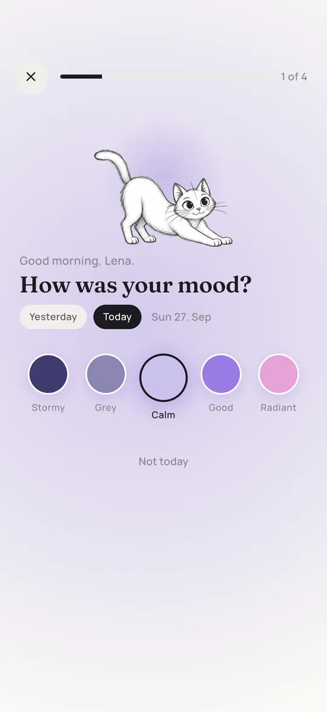

Free Year in Pixels template (printable PDF)
A blank Year in Pixels grid you can print today: 12 months, 31 days, a key with six slots and a line for your question. Below the template you will find how to set it up so you still enjoy filling it in when November comes around.
My Year in Pixels
Undated, so it works for 2026, 2027 or any other year. February 29 has a dashed box because it only exists in leap years. The next one is 2028.
The template is free for personal use, in your journal, your classroom or your therapy group. If you share it online, please link to this page instead of uploading the file somewhere else, so people always get the latest version.
What a Year in Pixels is
A Year in Pixels is a grid with one small square for every day of the year. At the end of each day, or the next morning, you color that day's square according to a key you set up in January. Most people track their mood, but the format works for anything you can answer in a word: how you slept, whether you trained, how much time you spent outside.
The idea spread through the bullet journal community in the late 2010s. It stuck around because it is so low effort: there is nothing to write, and after a few months the page turns into a picture of your year that you actually want to look at. Single days stop mattering, and you start seeing seasons, streaks and the odd week that was harder than you remembered.
Set it up in five steps
- Pick one question. Write it on the question line, for example How was my mood? or How did I sleep? One clear question per grid keeps the picture readable. If you want to track more, print a second page.
- Decide on three to six levels. Five is the sweet spot for mood: bad, low, okay, good, great. Fewer levels are faster to decide on, more levels give you nuance but make you hesitate. Our color key guide goes deeper on this.
- Fill in the key before day one. Color the six key boxes with the exact pens you will use and write the label next to each. A key you improvise in February will not match the colors you used in January.
- Choose a fixed moment. Either in the evening about today, or in the morning about yesterday. The morning version is easier to stick to because the day is already complete and you are not too tired to decide.
- Keep the pens with the page. If you have to look for the right marker, you will skip the day. Clip the page into your journal or pin it next to your bed with the pens right beside it.
Tip: Leave a day white if you really cannot remember it. A white square is honest data. A guessed color is not.
Pens and paper
Each box on the printed template is about 7 millimeters wide, a little over a quarter inch, so you want a pen that fills a small square evenly without flooding it.
| Tool | Good for | Watch out for |
|---|---|---|
| Felt tip markers | Bright, even color, quick to fill | Can bleed through thin paper |
| Brush pens | Lots of colors, soft look | Tips wear out on small boxes |
| Colored pencils | No bleeding, easy to layer two colors | Light shades look alike after a few months |
| Highlighters | Very fast, bold | Few colors, some fade in sunlight |
| Gel pens | Precise edges | Slow to fill whole boxes, can smudge |
If you use markers, print on thicker paper (around 120 g/m², often sold as 32 lb) so the colors do not show through. Normal copy paper is fine for pencils.
Printing tips
- Choose the PDF that matches your paper: A4 for Europe and most of the world, US Letter for the US and Canada.
- Print at 100 percent or actual size. Fit to page also works, the grid just gets slightly smaller.
- For an A5 bullet journal, print the A4 file at 71 percent, or two pages per sheet, and trim.
- No printer? The PDF works in note apps on a tablet too. Import it and color with the highlighter tool.
How to keep going
Almost every paper Year in Pixels looks great in January and has gaps by April. That is normal and not a sign that you failed. A few things help:
- Allow a two day catch up. If you forgot yesterday, fill it in today. After two days memory gets unreliable, so leave it white and move on.
- Never restart. A half colored year is still more information than a perfect January you threw away.
- Put it where you already are. Next to your toothbrush, on the fridge, inside the cover of the journal you already use.
- Link it to a habit. Morning coffee, evening tea, the moment you plug in your phone. Same moment every day.
- Use a reminder. A daily alarm on your phone with the question as its name works surprisingly well.
Paper or app?
Both have their place. Paper is calm, tactile and away from your phone. An app does the boring parts for you. Here is an honest comparison:
| Paper template | Pixi app | |
|---|---|---|
| Cost | Free | Free with up to 4 maps |
| Reminder | You set your own | Built in, every morning |
| Several questions | One page each | One map each, switch with a swipe |
| Missed days | Fill in from memory | Fill in from memory |
| Patterns between questions | You compare pages by eye | Statistics and correlations (Premium) |
| Feels like | A craft project | A 15 second check in |


Questions and answers
Is this Year in Pixels template really free?
Yes. Download it, print it, use it as often as you like for personal use, in class or in a group. No email sign up. If you share it online, please link to this page.
Can I use the template for 2027?
Yes. The template is undated, so it works for any year. Write the year next to the title. In years that are not leap years, simply skip the dashed February 29 box.
What size is the template?
There are two PDFs: A4 (210 by 297 millimeters) and US Letter (8.5 by 11 inches). Both are portrait and leave enough margin for hole punching.
Can I track two things on one template?
You can split each box diagonally and color one triangle per question, for example mood top left and sleep bottom right. It gets busy quickly, so most people prefer one page per question.
What should I track besides mood?
Sleep, energy, dreams, exercise, reading, water, weather and many more. See our list of Year in Pixels ideas with levels you can copy.

Written by Caspar Baumeister. I'm an indie developer in Berlin and I build Pixi on my own. I read every message, so if something here is unclear or you have an idea for the app, write to me: @casparbuilds on X or email.